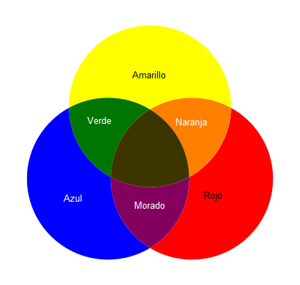
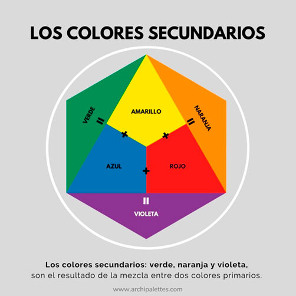
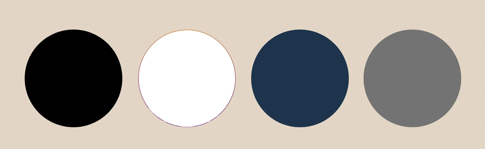
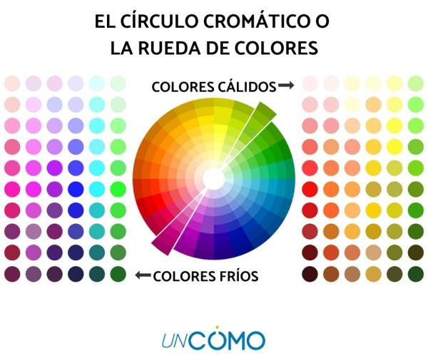
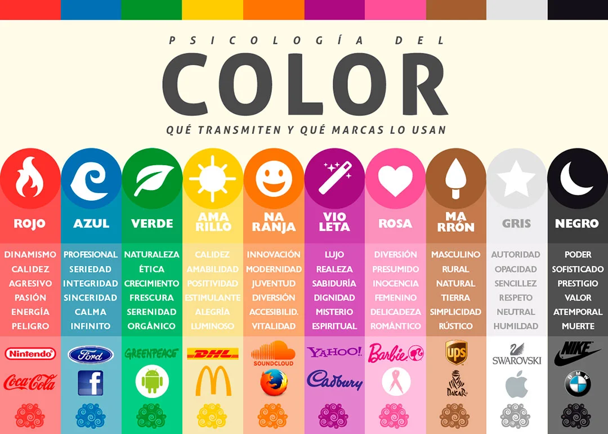

Bienvenido a la página de inicio
Esta es la sección de inicio de nuestra página SPA. Puedes navegar a otras secciones utilizando los enlaces arriba.
CECyTEQ
no°83
Luis Ángel Solís Reyes
4a-TPROG
Tería del color
La teoría del color es un conjunto de principios y conceptos que explican cómo se perciben los colores y cómo se pueden combinar o usar de manera efectiva en el diseño visual,
el arte, la moda, la decoración, entre otros campos. La teoría del color se basa en la comprensión de la relación entre los colores y cómo interactúan entre sí.
Conceptos Básicos
Colores Primarios:
Los colores primarios son aquellos que no se pueden obtener mediante la mezcla de otros colores.
En el sistema de color sustractivo (usado en pintura, impresión, etc.), los colores primarios son:
Rojo
Amarillo
Azul

Colores Secundarios:
Se obtienen mezclando dos colores primarios. Los colores secundarios son:
Naranja (mezcla de rojo y amarillo)
Verde (mezcla de azul y amarillo)
Violeta (mezcla de rojo y azul)

Colores Neutros:
Son colores que no tienen una tonalidad definida o fuerte. Los colores neutros incluyen:
Blanco
Negro
Gris
Beige

El Círculo Cromático
El círculo cromático es una herramienta que muestra la relación entre los colores de manera visual. Los colores en el círculo cromático se organizan de acuerdo con sus tonalidades y matices, comenzando con los colores primarios, luego los secundarios, y finalmente los terciarios.
Relación entre los Colores
Colores Complementarios:
Son colores que se encuentran opuestos en el círculo cromático, como el rojo y el verde, o el azul y el naranja. Cuando se usan juntos, crean un alto contraste y una sensación de equilibrio visual. Los colores complementarios pueden usarse para resaltar un color y hacerlo destacar.
Colores Análogos:
Son colores que están juntos en el círculo cromático, como rojo, rojo-anaranjado y naranja. Este tipo de combinación produce una sensación armoniosa y tranquila.
Colores Triádicos:
Son tres colores que están equidistantes entre sí en el círculo cromático. Un ejemplo clásico es la combinación de rojo, amarillo y azul. Los colores triádicos ofrecen un contraste equilibrado y son bastante versátiles.
Colores Tetrádicos o Doble Complementario:
Este esquema involucra cuatro colores que se agrupan en dos pares de colores complementarios. Esto crea una paleta rica y vibrante.
Colores Monocromáticos:
Son variantes de un solo color, que se logran ajustando la saturación y el brillo de un color específico. Un esquema monocromático tiene una armonía visual suave, pero puede ser limitado si no se usan las variaciones adecuadas.

psicologia del color
La psicología del color es el estudio de cómo los colores afectan las emociones, comportamientos y percepciones de las personas.
Cada color tiene diferentes connotaciones y efectos psicológicos que pueden influir en nuestro estado de ánimo y en nuestras decisiones.
Estos efectos pueden variar según la cultura, las experiencias personales y el contexto en el que se presenten los colores.
A continuación, te explico algunos de los colores más comunes y sus asociaciones psicológicas:
1. Rojo:
Emociones: Energía, pasión, amor, poder, agresión, peligro.
Efectos psicológicos: El rojo puede aumentar el ritmo cardíaco y la presión arterial, lo que lo convierte en un color estimulante. Se asocia con la excitación, la fuerza y la urgencia.
Usos comunes: Se utiliza en ventas, publicidad y marketing para llamar la atención y provocar emociones intensas.
2. Azul
Emociones: Calma, confianza, seguridad, serenidad, tristeza.
Efectos psicológicos: El azul es un color tranquilizante que se asocia con la calma y la estabilidad emocional. Tiene un efecto relajante y puede generar sensaciones de confianza y profesionalismo.
Usos comunes: Se usa en oficinas, corporaciones y marcas que desean transmitir seriedad, confianza y seguridad.
3. Amarillo
Emociones: Felicidad, optimismo, energía, alerta.
Efectos psicológicos: El amarillo es estimulante y se asocia con la creatividad y la positividad. Sin embargo, en exceso puede ser irritante o provocar ansiedad.
Usos comunes: Se utiliza para captar la atención y generar una sensación de calor y energía, común en señales de advertencia y publicidad.
4. Verde
Emociones: Naturaleza, crecimiento, equilibrio, calma, frescura.
psicológicos: El verde está asociado con la naturaleza, la salud y el equilibrio. Tiene un efecto relajante y puede promover la tranquilidad y la armonía.
Usos comunes: Se utiliza en marcas ecológicas o relacionadas con la salud, además de ser común en ambientes que buscan transmitir calma, como salas de espera o jardines.
5. Naranja
Emociones: Energía, entusiasmo, creatividad, calidez.
Efectos psicológicos: El naranja es un color vibrante y energizante que puede estimular la creatividad y la interacción social. Es un color cálido que evoca sentimientos de diversión y emoción.
Usos comunes: Se usa para promover la acción, el entretenimiento y la interacción, y se asocia a menudo con productos para niños o eventos deportivos.
6. Púrpura/Violeta
Lujo, creatividad, misterio, espiritualidad, sabiduría.
Efectos psicológicos: El púrpura combina la estabilidad del azul y la energía del rojo, lo que lo convierte en un color asociado con la realeza, el lujo y la creatividad. Se puede asociar tanto con lo místico como con lo espiritual.
comunes: Se utiliza en marcas de lujo, productos de belleza, y en ocasiones, en ambientes espirituales o creativos.
7. Rosa
Emociones: Dulzura, feminidad, ternura, calma.
Efectos psicológicos: El rosa tiene connotaciones suaves y acogedoras, y se asocia con la ternura y el cariño. Dependiendo de su tono, puede ser más relajante o más estimulante.
Usos comunes: Se usa principalmente en productos y marcas
8. Negro
Emociones: Elegancia, sofisticación, misterio, poder, luto.
Efectos psicológicos: El negro tiene un efecto dramático y puede transmitir poder, autoridad y lujo. A menudo se asocia con lo misterioso y lo desconocido, pero también con la tristeza y el luto.
comunes: Se utiliza en el diseño de productos de lujo, moda y en espacios que buscan transmitir sofisticación y seriedad.
9. Blanco
Pureza, limpieza, simplicidad, paz.
psicológicos: El blanco se asocia con la claridad, la paz y la frescura. Tiene un efecto calmante y se utiliza para transmitir simplicidad y libertad.
comunes: Se usa en espacios de salud, limpieza y en diseños minimalistas para crear una atmósfera tranquila y ordenada.
10. Gris
Neutralidad, profesionalismo, equilibrio, aburrimiento.
psicológicos: El gris se asocia con la neutralidad y la seriedad. Puede ser percibido como un color que no genera mucha emoción, lo que puede hacer que ciertos espacios o productos se vean fríos o distantes.
comunes: Se utiliza en marcas y productos profesionales o corporativos que desean transmitir estabilidad, pero también puede usarse como un color de fondo para no distraer la atención de otros elementos.
11. Marrón
Tierra, confiabilidad, estabilidad, rusticidad.
psicológicos: El marrón está asociado con la naturaleza, la solidez y la calidez. Es un color que genera sensaciones de confort y fiabilidad.
comunes: Es común en marcas de productos naturales o orgánicos, así como en ambientes rústicos y acogedores.
